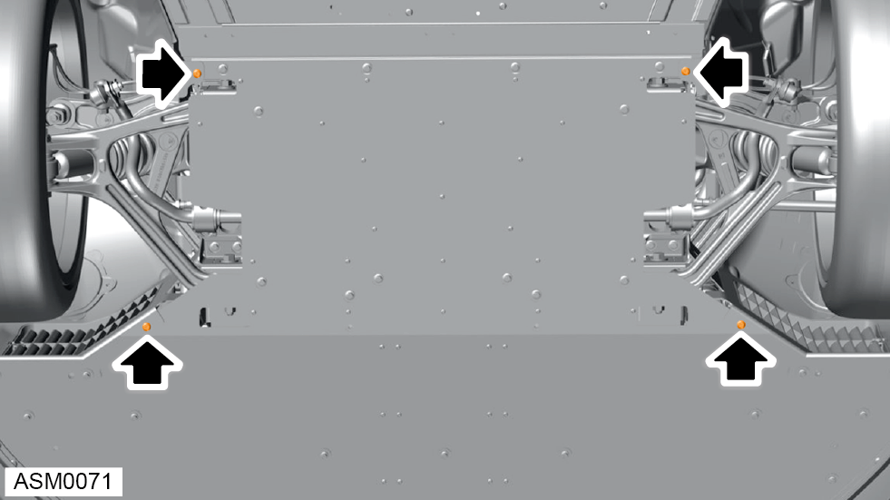
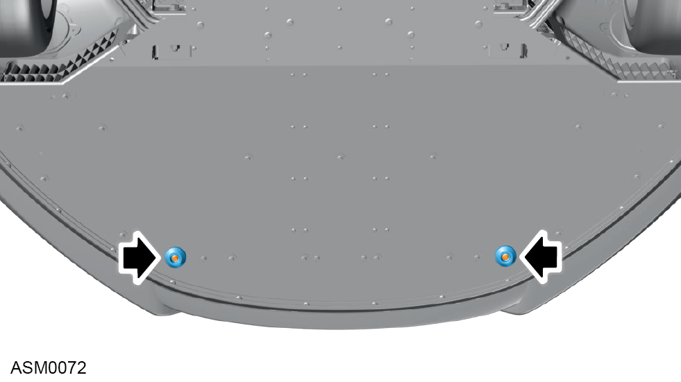
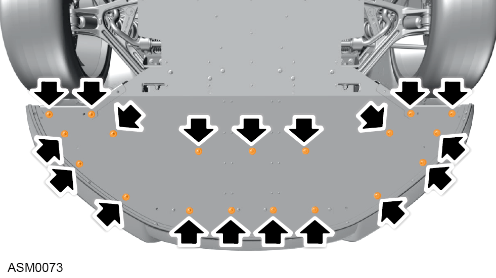
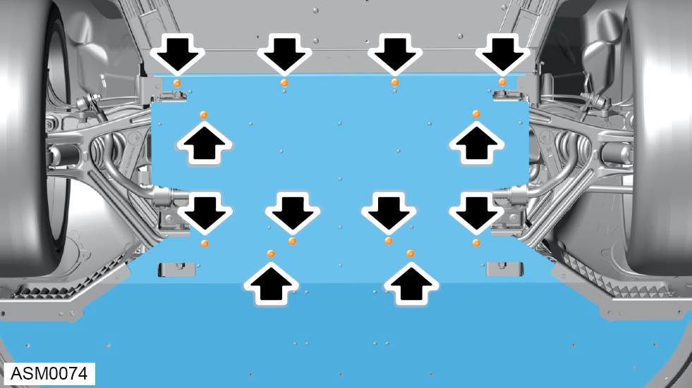

Undertray - Front
Print
Operation Code: 10.25.07-02
Removal
- Raise and support vehicle on 2 post lift. Refer to procedure.

- Remove scrivets (x4) securing front undertray to wheelarch liners.

- Remove M6x30 bolts and rubbing blocks (x2) securing undertray to undertray support bracket. Torque 9 Nm.

- Remove M6x16 bolts and washers (x19) securing undertray to front bumper panel, bumper mounting bracket, radiator support bracket and centre air duct. Torque 6 Nm.
- With assistance support weight of undertray.

- Remove M8x20 bolts (x12) securing undertray to front lower crossmember and lower dash panel crossmember. Torque 20 Nm.
NOTE: When final bolts are removed support the diffuser so it does not drop unexpectedly.
- With assistance remove undertray from vehicle.
NOTE: When lowering undertray make sure it is released from wheelarch liners.
Installation
- Installation is the reverse of removal procedure.